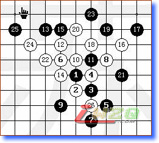
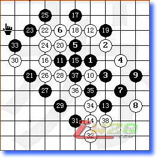

本人跟高手下棋，没有胜绩，反思如下：
1。心理问题，有胆怯心态，尤其是在输了前几盘之后，落子更是畏手畏脚，表现在行子保守，甚至很好的乘手机会都没有看到，而是一味防守而没有根据棋型变化来走，确切讲是下棋不客观了，而是被对方的段位或者暂时的困难或者挫折吓倒了，乱了方寸，说明我依然是一位心里素质很不稳定的选手；下面这盘棋就是在这种心理状态下输掉的，黑15是一个恶招，直接导致失败，如果下到白14下方形成乘手则被动转为主动！

2。还是心里问题，在形式变得模糊的情况下，不能静下心去冷静分析，而是贸然采取进攻（或者防守）的恶招；对自己心理情绪的把握依然需要修炼；下图就是因为黑该下第33手棋时因为对棋局分析不够而导致白方四三获胜；

3。心里问题，其实棋力是永无止境的，就算你下过了一些人得到了一些分那么能说明你的棋力就是很高了么，山外有山的道理永远正确；为了赢一盘棋，而采取棋盘之外的招数那就更不可取了，所以无论下到什么时候，对棋型的思索是唯一追求的目标，其他的不是；棋力增加了就算有一城一池的得失那又算上什么呢？自己在这种情况下也输过棋，看到对方时间不多了，想通过对方超时取胜，就一通乱下，象没头的苍蝇一样进攻，企图搅乱对方的节奏，反而被对方反击得手，在最后时刻输棋，在那一刻，其实自己的心思就没有放到棋局本身而是其他不该去的地方；
心理问题是一方面,行棋的技巧还是要多学点.常言说得好,艺高人胆大!
个人感觉,以上两开局的黑7手不强.